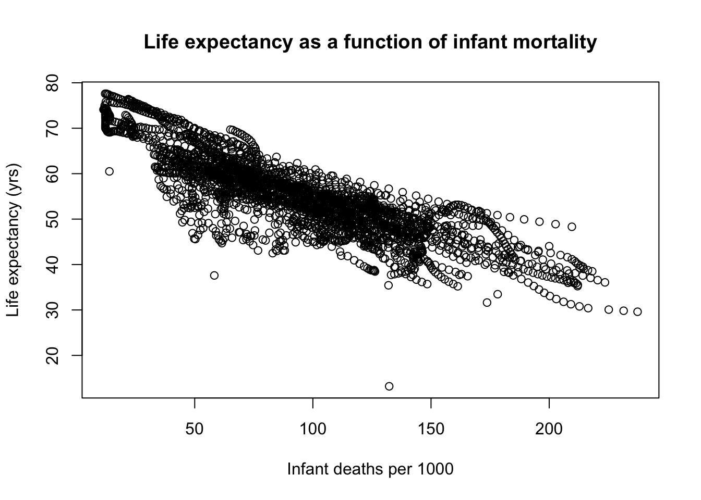
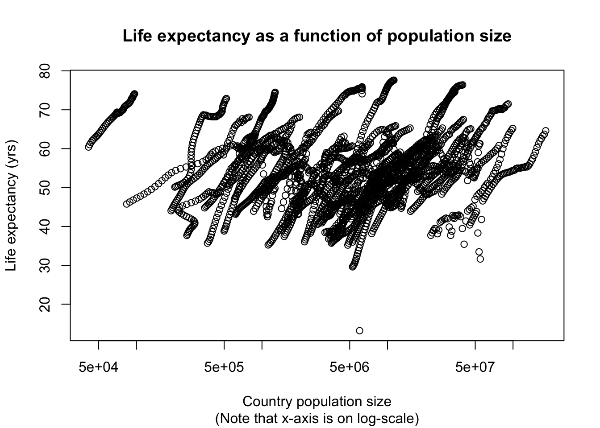
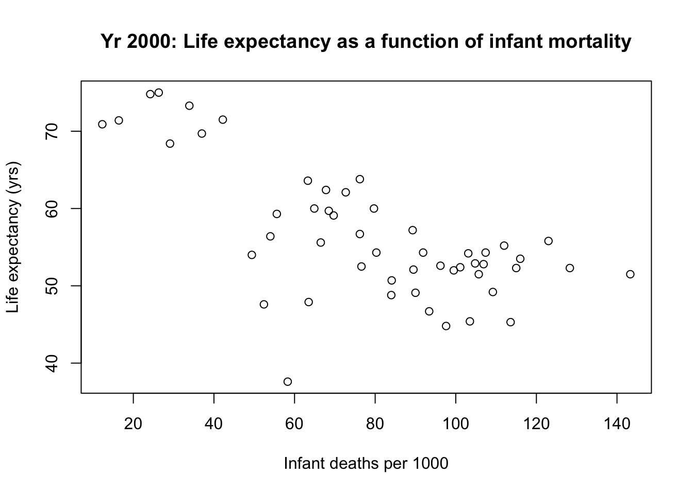
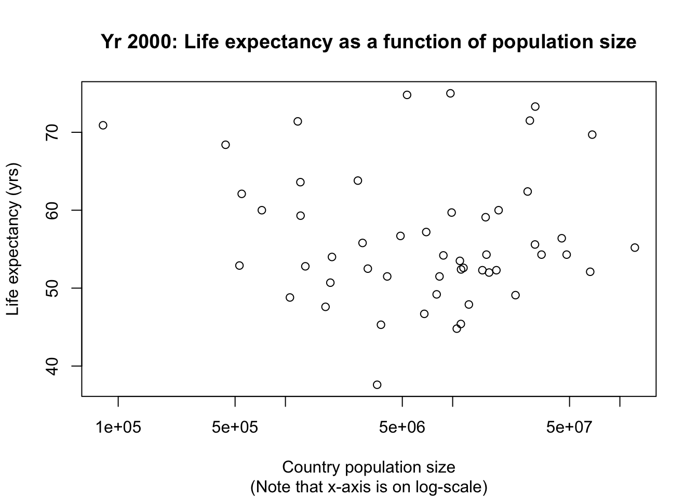

library(dslabs) # load package with required data
help(gapminder) # help on gapminder data
str(gapminder) # gapminder variable data types## 'data.frame': 10545 obs. of 9 variables:
## $ country : Factor w/ 185 levels "Albania","Algeria",..: 1 2 3 4 5 6 7 8 9 10 ...
## $ year : int 1960 1960 1960 1960 1960 1960 1960 1960 1960 1960 ...
## $ infant_mortality: num 115.4 148.2 208 NA 59.9 ...
## $ life_expectancy : num 62.9 47.5 36 63 65.4 ...
## $ fertility : num 6.19 7.65 7.32 4.43 3.11 4.55 4.82 3.45 2.7 5.57 ...
## $ population : num 1636054 11124892 5270844 54681 20619075 ...
## $ gdp : num NA 1.38e+10 NA NA 1.08e+11 ...
## $ continent : Factor w/ 5 levels "Africa","Americas",..: 4 1 1 2 2 3 2 5 4 3 ...
## $ region : Factor w/ 22 levels "Australia and New Zealand",..: 19 11 10 2 15 21 2 1 22 21 ...## country year infant_mortality
## Albania : 57 Min. :1960 Min. : 1.50
## Algeria : 57 1st Qu.:1974 1st Qu.: 16.00
## Angola : 57 Median :1988 Median : 41.50
## Antigua and Barbuda: 57 Mean :1988 Mean : 55.31
## Argentina : 57 3rd Qu.:2002 3rd Qu.: 85.10
## Armenia : 57 Max. :2016 Max. :276.90
## (Other) :10203 NA's :1453
## life_expectancy fertility population gdp
## Min. :13.20 Min. :0.840 Min. :3.124e+04 Min. :4.040e+07
## 1st Qu.:57.50 1st Qu.:2.200 1st Qu.:1.333e+06 1st Qu.:1.846e+09
## Median :67.54 Median :3.750 Median :5.009e+06 Median :7.794e+09
## Mean :64.81 Mean :4.084 Mean :2.701e+07 Mean :1.480e+11
## 3rd Qu.:73.00 3rd Qu.:6.000 3rd Qu.:1.523e+07 3rd Qu.:5.540e+10
## Max. :83.90 Max. :9.220 Max. :1.376e+09 Max. :1.174e+13
## NA's :187 NA's :185 NA's :2972
## continent region
## Africa :2907 Western Asia :1026
## Americas:2052 Eastern Africa : 912
## Asia :2679 Western Africa : 912
## Europe :2223 Caribbean : 741
## Oceania : 684 South America : 684
## Southern Europe: 684
## (Other) :5586## [1] "data.frame"# Work with the Africa data ----
africadata <- subset(gapminder, continent == "Africa") # assign only the African countries to a new variable called africadata
str(africadata)## 'data.frame': 2907 obs. of 9 variables:
## $ country : Factor w/ 185 levels "Albania","Algeria",..: 2 3 18 22 26 27 29 31 32 33 ...
## $ year : int 1960 1960 1960 1960 1960 1960 1960 1960 1960 1960 ...
## $ infant_mortality: num 148 208 187 116 161 ...
## $ life_expectancy : num 47.5 36 38.3 50.3 35.2 ...
## $ fertility : num 7.65 7.32 6.28 6.62 6.29 6.95 5.65 6.89 5.84 6.25 ...
## $ population : num 11124892 5270844 2431620 524029 4829291 ...
## $ gdp : num 1.38e+10 NA 6.22e+08 1.24e+08 5.97e+08 ...
## $ continent : Factor w/ 5 levels "Africa","Americas",..: 1 1 1 1 1 1 1 1 1 1 ...
## $ region : Factor w/ 22 levels "Australia and New Zealand",..: 11 10 20 17 20 5 10 20 10 10 ...## country year infant_mortality life_expectancy
## Algeria : 57 Min. :1960 Min. : 11.40 Min. :13.20
## Angola : 57 1st Qu.:1974 1st Qu.: 62.20 1st Qu.:48.23
## Benin : 57 Median :1988 Median : 93.40 Median :53.98
## Botswana : 57 Mean :1988 Mean : 95.12 Mean :54.38
## Burkina Faso: 57 3rd Qu.:2002 3rd Qu.:124.70 3rd Qu.:60.10
## Burundi : 57 Max. :2016 Max. :237.40 Max. :77.60
## (Other) :2565 NA's :226
## fertility population gdp continent
## Min. :1.500 Min. : 41538 Min. :4.659e+07 Africa :2907
## 1st Qu.:5.160 1st Qu.: 1605232 1st Qu.:8.373e+08 Americas: 0
## Median :6.160 Median : 5570982 Median :2.448e+09 Asia : 0
## Mean :5.851 Mean : 12235961 Mean :9.346e+09 Europe : 0
## 3rd Qu.:6.860 3rd Qu.: 13888152 3rd Qu.:6.552e+09 Oceania : 0
## Max. :8.450 Max. :182201962 Max. :1.935e+11
## NA's :51 NA's :51 NA's :637
## region
## Eastern Africa :912
## Western Africa :912
## Middle Africa :456
## Northern Africa :342
## Southern Africa :285
## Australia and New Zealand: 0
## (Other) : 0# subset with infant mort
subset_inf_life <- africadata[, c("infant_mortality", "life_expectancy")] # infant mortality is per 1000, life expectancy is in years
str(subset_inf_life) ## 'data.frame': 2907 obs. of 2 variables:
## $ infant_mortality: num 148 208 187 116 161 ...
## $ life_expectancy : num 47.5 36 38.3 50.3 35.2 ...## infant_mortality life_expectancy
## Min. : 11.40 Min. :13.20
## 1st Qu.: 62.20 1st Qu.:48.23
## Median : 93.40 Median :53.98
## Mean : 95.12 Mean :54.38
## 3rd Qu.:124.70 3rd Qu.:60.10
## Max. :237.40 Max. :77.60
## NA's :226# subset with pop
subset_pop_life <- africadata[, c("population", "life_expectancy")] # population is the country population size
str(subset_pop_life) # large range of country pop sizes## 'data.frame': 2907 obs. of 2 variables:
## $ population : num 11124892 5270844 2431620 524029 4829291 ...
## $ life_expectancy: num 47.5 36 38.3 50.3 35.2 ...## population life_expectancy
## Min. : 41538 Min. :13.20
## 1st Qu.: 1605232 1st Qu.:48.23
## Median : 5570982 Median :53.98
## Mean : 12235961 Mean :54.38
## 3rd Qu.: 13888152 3rd Qu.:60.10
## Max. :182201962 Max. :77.60
## NA's :51# Plots ----
# life expectancy as a function of infant mortality
with(subset_inf_life, plot(life_expectancy ~ infant_mortality, main = "Life expectancy as a function of infant mortality", ylab = "Life expectancy (yrs)", xlab = "Infant deaths per 1000")) # negative correlation. Each streak is a different country.
# life expectancy as a function of population size, using a log-scale on the x-axis
with(subset_pop_life, plot(life_expectancy ~ population, log = "x", main = "Life expectancy as a function of population size", sub = "(Note that x-axis is on log-scale)", ylab = "Life expectancy (yrs)", xlab = "Country population size")) # Each streak is a different country. Positive correlation within country.
# More data processing ----
(missing_inf_mort <- unique(africadata$year[is.na(africadata$infant_mortality)])) # years with missing data for infant mortality## [1] 1960 1961 1962 1963 1964 1965 1966 1967 1968 1969 1970 1971 1972 1973
## [15] 1974 1975 1976 1977 1978 1979 1980 1981 2016## 'data.frame': 51 obs. of 9 variables:
## $ country : Factor w/ 185 levels "Albania","Algeria",..: 2 3 18 22 26 27 29 31 32 33 ...
## $ year : int 2000 2000 2000 2000 2000 2000 2000 2000 2000 2000 ...
## $ infant_mortality: num 33.9 128.3 89.3 52.4 96.2 ...
## $ life_expectancy : num 73.3 52.3 57.2 47.6 52.6 46.7 54.3 68.4 45.3 51.5 ...
## $ fertility : num 2.51 6.84 5.98 3.41 6.59 7.06 5.62 3.7 5.45 7.35 ...
## $ population : num 31183658 15058638 6949366 1736579 11607944 ...
## $ gdp : num 5.48e+10 9.13e+09 2.25e+09 5.63e+09 2.61e+09 ...
## $ continent : Factor w/ 5 levels "Africa","Americas",..: 1 1 1 1 1 1 1 1 1 1 ...
## $ region : Factor w/ 22 levels "Australia and New Zealand",..: 11 10 20 17 20 5 10 20 10 10 ...## country year infant_mortality life_expectancy
## Algeria : 1 Min. :2000 Min. : 12.30 Min. :37.60
## Angola : 1 1st Qu.:2000 1st Qu.: 60.80 1st Qu.:51.75
## Benin : 1 Median :2000 Median : 80.30 Median :54.30
## Botswana : 1 Mean :2000 Mean : 78.93 Mean :56.36
## Burkina Faso: 1 3rd Qu.:2000 3rd Qu.:103.30 3rd Qu.:60.00
## Burundi : 1 Max. :2000 Max. :143.30 Max. :75.00
## (Other) :45
## fertility population gdp continent
## Min. :1.990 Min. : 81154 Min. :2.019e+08 Africa :51
## 1st Qu.:4.150 1st Qu.: 2304687 1st Qu.:1.274e+09 Americas: 0
## Median :5.550 Median : 8799165 Median :3.238e+09 Asia : 0
## Mean :5.156 Mean : 15659800 Mean :1.155e+10 Europe : 0
## 3rd Qu.:5.960 3rd Qu.: 17391242 3rd Qu.:8.654e+09 Oceania : 0
## Max. :7.730 Max. :122876723 Max. :1.329e+11
##
## region
## Eastern Africa :16
## Western Africa :16
## Middle Africa : 8
## Northern Africa : 6
## Southern Africa : 5
## Australia and New Zealand: 0
## (Other) : 0# More plotting ----
# For Yr2000 ONLY, life expectancy as a function of infant mortality
with(subset_yr2000, plot(life_expectancy ~ infant_mortality, main = "Yr 2000: Life expectancy as a function of infant mortality", ylab = "Life expectancy (yrs)", xlab = "Infant deaths per 1000")) # negative correlation
# For Yr2000 ONLY, life expectancy as a function of population size, using a log-scale on the x-axis
with(subset_yr2000, plot(life_expectancy ~ population, log = "x", main = "Yr 2000: Life expectancy as a function of population size", sub = "(Note that x-axis is on log-scale)", ylab = "Life expectancy (yrs)", xlab = "Country population size")) # No apparent correlation
# Linear models (using Yr2000 data) ----
# linear model predicting life expectancy as a function of infant mortality
summary(fit1 <- with(subset_yr2000, lm(life_expectancy ~ infant_mortality))) # p = 2.83E-8, so highly significant##
## Call:
## lm(formula = life_expectancy ~ infant_mortality)
##
## Residuals:
## Min 1Q Median 3Q Max
## -22.6651 -3.7087 0.9914 4.0408 8.6817
##
## Coefficients:
## Estimate Std. Error t value Pr(>|t|)
## (Intercept) 71.29331 2.42611 29.386 < 2e-16 ***
## infant_mortality -0.18916 0.02869 -6.594 2.83e-08 ***
## ---
## Signif. codes: 0 '***' 0.001 '**' 0.01 '*' 0.05 '.' 0.1 ' ' 1
##
## Residual standard error: 6.221 on 49 degrees of freedom
## Multiple R-squared: 0.4701, Adjusted R-squared: 0.4593
## F-statistic: 43.48 on 1 and 49 DF, p-value: 2.826e-08# linear model predicting life expectancy as a function of population size
summary(fit2 <- with(subset_yr2000, lm(life_expectancy ~ population))) # p = 0.616, so not statistically significant at alpha = 0.05##
## Call:
## lm(formula = life_expectancy ~ population)
##
## Residuals:
## Min 1Q Median 3Q Max
## -18.429 -4.602 -2.568 3.800 18.802
##
## Coefficients:
## Estimate Std. Error t value Pr(>|t|)
## (Intercept) 5.593e+01 1.468e+00 38.097 <2e-16 ***
## population 2.756e-08 5.459e-08 0.505 0.616
## ---
## Signif. codes: 0 '***' 0.001 '**' 0.01 '*' 0.05 '.' 0.1 ' ' 1
##
## Residual standard error: 8.524 on 49 degrees of freedom
## Multiple R-squared: 0.005176, Adjusted R-squared: -0.01513
## F-statistic: 0.2549 on 1 and 49 DF, p-value: 0.6159